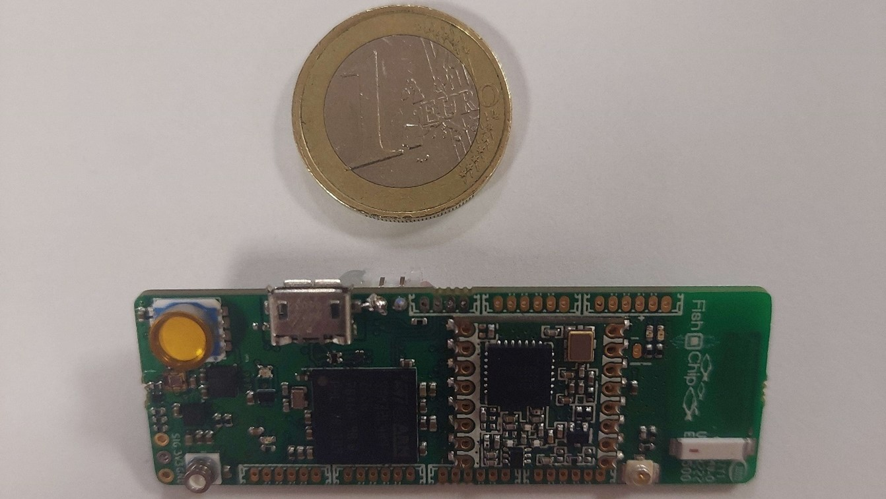
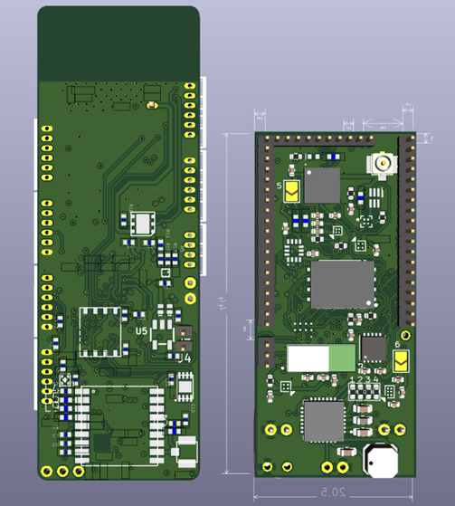

Développement d’une carte de suivi d'animaux marins - Fish’n’Chip 2

Carte Fish’n’Chip 2 – Routage final réalisé sous KiCAD (PCB 6 couches, 20,5 × 44 mm)
Contexte du projet
Ce projet a été réalisé dans le cadre de mon stage de 10 semaines en deuxième année de BUT
GEII
(Génie Électrique et Informatique Industrielle) au LIRMM
(Laboratoire d’Informatique, de Robotique et de Microélectronique de Montpellier).
L'équipe dans laquelle j'ai été recruté mène des travaux de recherche sur des dispositifs électroniques
embarqués à
faible consommation énergétique destinés au suivi d’animaux marins.
L'un de ces dispositifs, la Fish’n’Chip, est intégrée dans de petites balises
fixées sur des animaux
(tortues, thons, dauphins…) afin d’enregistrer et transmettre des données environnementales comme
la position GNSS, la température, la pression, la luminosité ambiante ou encore les accélérations.
La première version de la carte, développée lors d’un projet antérieur, avait permis de valider le concept mais présentait plusieurs limites : certains composants devenus obsolètes, un encombrement important et une consommation énergétique perfectible. Mon stage s’inscrivait dans la continuité de ce travail avec pour objectif d'aider à la conception d'une nouvelle version.
Objectifs
L’objectif principal était de concevoir une nouvelle version de la carte nommée Fish’n’Chip 2 (FNC2), destinée à remplacer la première génération. Cette nouvelle carte devait répondre à plusieurs contraintes techniques précises :
- Réduire les dimensions de la carte tout en conservant les fonctionnalités essentielles
- Mettre à jour les composants obsolètes en assurant la compatibilité logicielle
- Intégrer et tester un nouveau circuit d'alimentation basculant entre plusieurs sources
- Optimiser la consommation pour prolonger l’autonomie du dispositif
- Prévoir un maximum de connecteurs donnant accès aux signaux du microcontrôleur pour diverses cartes filles
L’ensemble du travail devait être réalisé à l’aide du logiciel KiCAD pour la conception et le routage du circuit imprimé.
Travaux réalisés
Le projet a été mené sur une période de dix semaines et a suivi une approche progressive allant de l’analyse du schéma existant jusqu’à la conception complète du nouveau circuit. Les principales étapes ont été les suivantes :
- Analyse du schéma d’origine : étude détaillée des anciennes versions du circuit pour identifier les points critiques. Un travail de compréhension des différents modules (microcontrôleur, capteurs, alimentation, communication) a été effectué à partir des fichiers sources et des datasheets.
- Choix et intégration de nouveaux composants : sélection d’un convertisseur analogique-numérique (ADC) externe, ajout d’un oscillateur externe, et remplacement des régulateurs d’alimentation par des versions à meilleur rendement.
- Création d’une carte de test dédiée : avant d’intégrer le nouveau système d’alimentation sur la carte principale, une carte de test a été réalisée pour valider le fonctionnement en conditions réelles.
- Routage complet de la carte Fish’n’Chip 2 : le circuit final a été routé sur un PCB à 6 couches.
Résultats
La carte Fish’n’Chip 2 atteint des dimensions finales de 20,5 × 44 mm, soit une réduction d’environ 27 % par rapport à la version précédente, tout en intégrant davantage de fonctionnalités. Le nouveau circuit d’alimentation a démontré un comportement stable, capable de basculer automatiquement entre différentes sources d’énergie sans coupure d’alimentation. Les tests de mesure réalisés sur la carte d’alimentation ont confirmé la fiabilité du système, avec des rendements conformes aux attentes.

Comparatif Fish'n'chip 1 - Fish'n'chip 2
Rendu 3D de la Fish'n'chip 2
À l'issue du stage, le routage était complété et le circuit pouvait être envoyé en fabrication.